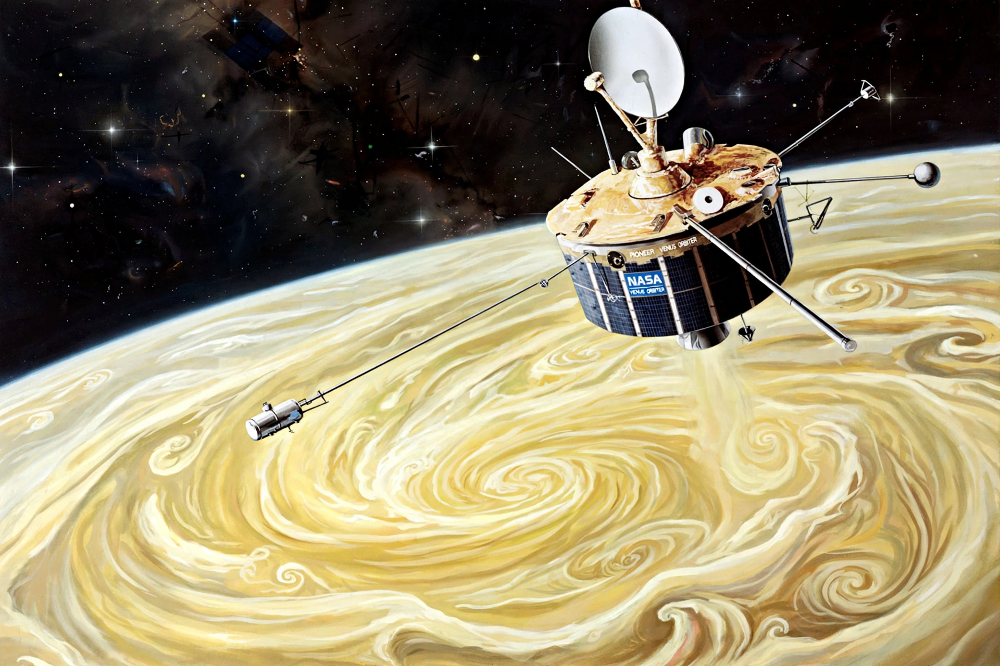

| Operator | NASA |
| Spacecraft | Pioneer Venus Orbiter (PVO); Pioneer Venus Multiprobe |
| Launches | 20 May 1978 (Orbiter); 8 August 1978 (Multiprobe) |
| Venus arrival | 4 December 1978 (Orbiter); 9 December 1978 (probes) |
| End of mission | October 1992 (Orbiter burned up in atmosphere) |

The Pioneer Venus project was part of NASA's Pioneer program and consisted of two spacecraft launched to Venus in 1978: the Pioneer Venus Orbiter (Pioneer Venus 1, also designated Pioneer 12) and the Pioneer Venus Multiprobe (Pioneer Venus 2, Pioneer 13). Together they carried out the first detailed global study of Venus's atmosphere and mapped its surface by radar.
Launched on 20 May 1978 aboard an Atlas-Centaur, the Orbiter entered an elliptical polar orbit around Venus on 4 December 1978. For over a decade it measured the atmosphere, ionosphere, solar-wind interaction and the planet's gravity and magnetic fields. Its radar mapper produced the first near-global topographic map of Venus, revealing a predominantly smooth surface with features such as Maxwell Montes. The spacecraft continued operating until its orbit decayed and it burned up in the Venusian atmosphere in October 1992 — the longest-lived Venus orbiter of its era.
Launched on 8 August 1978, the Multiprobe released four instrumented entry probes — one large and three small probes — plus measurements from the carrier bus itself, which entered the atmosphere on 9 December 1978. The probes descended through the clouds at five locations, transmitting profiles of temperature, pressure and composition, confirming surface temperatures around 460 °C and pressures near 90 atmospheres. One small probe (the Day Probe) survived impact and continued transmitting from the surface for over an hour. The probes confirmed the atmosphere is composed mostly of carbon dioxide with clouds of sulfuric acid, and measured an extreme deuterium-to-hydrogen ratio suggesting Venus once held far more water.
The project transformed understanding of Venus's climate, runaway greenhouse effect and super-rotating atmosphere, and paved the way for the Magellan radar mapping mission of the 1990s.